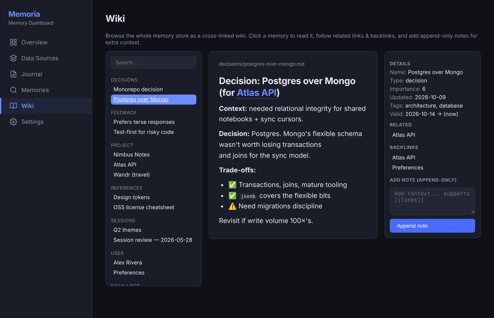

Long-term memory for Claude, as a Markdown repo you own. Hybrid search, git sync, one memory for Claude Code and claude.ai.
Markdown files with YAML frontmatter. Grep it, edit it, commit it. The search index is derived and rebuilds from the files.
No sync service. Daily logs are append-only, so git's union merge driver keeps both machines' entries.
Local embeddings plus BM25 keywords. The eval is in the repo, with what it does not prove written next to the score.
stdio for Claude Code, OAuth 2.1 over HTTP for claude.ai. What one learns, the other can find.
Rendered Markdown, related links and backlinks, for every memory in the store.

The store defaults to ~/.memoria and is created on the first write. Embeddings run locally.
Long-term memory for Claude, as a Markdown repo you own.
Long-term memory for Claude, as a Markdown repo you own. Hybrid search, git sync, one memory for Claude Code and claude.ai.